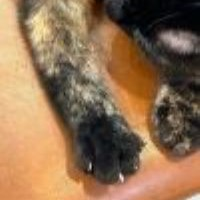

1.고양이발톱

학원에서 기르는 고양이의 발톱을 찍었다. 내가 제일 좋아하는 동물은 고양이인데, 이 날 고양이의 발톱을 세운 장면을 보게 되어서 찍었다. 고양이를 좋아하는 이유는 제멋대로인 성격과 귀여운 외모 때문이다. 얼굴도 물론 귀엽지만, 마치 솜방망이 같은 고양이의 작은 손발도 좋아한다. 거기에 작게 삐쭉 튀어나온 발톱을 좋아하는데, 이런 부분이 고양이의 가장 귀여운 점 이라고 생각한다.
2.회전목마

수성랜드에 갔을 때 찍었다. 친구와 저녁을 먹으러 가던 도중 우연히 보게 되어 호기심으로 가게 되었을 때 찍었다. 사람들이 없었고 낡은 놀이기구들만 남아서 엄청 휑했고 어스름한 분위기도 느껴져서 살짝 무서운 분위기였다. 그중에서 가장 인상에 남았던게 이 회전목마이다. 주위의 음산하고 어두운 분위기와 너무 잘 어울렸었다. 뒤에 노을이 지고 있어 역광으로 찍힌게 더 쓸쓸하고 외로운 느낌과 이 공간의 공허한 느낌이 잘 느껴졌다. 평소에 이런 낡은 느낌을 좋아하고 자료들을 찾아보는데, 행복과 즐거움의 상징인 놀이공원의 회전목마에 이런 분위기가 느껴진다는 것이 좋았다. 내가 이런 분위기를 좋아한다는 것을 다시 한 번 확인할 수 있었다.
3.놀이기구

마찬가지로 수성랜드에 갔었을 때 찍었다. 사람이 아무도 없어서 휑했고 낡아서 페인트칠이 벗겨지는 놀이기구들이 있었다. 앞의 회전목마가 음산한 분위기였다면 이 사진은 공간의 공허함과 쓸쓸함이 더 많이 묻어 나오는 사진이라고 생각한다. 낡은 놀이기구들과 사람이 아무도 없어서 더욱 그런 분위기가 만들어준다. 오래돼서 페인트칠이 조금 조금씩 벗겨져 있고 이걸 보수하려고 여러 번 덧댄 흑적들이 있던데 그게 더 놀이기구들을 기괴하게 만들었다. 절대로 돈 주고 타기 싫은 비주얼로 만들어주었다. 나는 그런 분위기도 나쁘지 않았다.
4.거위

수성랜드 근처 한강에 있는 거위를 찍었다. 덩치도 크고 울음소리도 커서 조금 무서웠었다. 물에 있다 얼마 지나지 않고 사람들이 있는 산책로 쪽에도 올라오려고 해서 자리를 피했다. 오리는 많이 봤어도 거위를 본 것은 아마 처음이다. 신기하기도 했고 워낙 큰 소리로 울고 있어서 눈을 뗄수가 없었다. 거위를 보는 것도 재밌기도 하고, 신기해서 찍었다. 조금 더 가까이에서 찍었으면 어땠을까 싶은 마음도 있다.
5.낙엽사이 꽃

영대 디자인관 화단에서 찍었다. 낙엽들 밖에 없던 화단에 혼자 작게 피어난 꽃이 인상적이었다. 칙칙한 갈색 낙엽들 사이로 보라색 꽃이 피었는데 실제로 보면 굉장히 눈에 띄고 색도 예뻤다. 나는 반복되는 패턴들 속에서 하나만 딱 눈에 띄게 다른 걸 좋아하는데, 포스터나 그림 중에서도 이런 느낌이 나는 것들도 좋아한다. 이 경우에 마찬가지다. 평소에 그림에서 강조되는 색깔이 하나가 들어간다거나 보색으로 포인트가 들어간 그림들을 좋아한다. 좋아하는 이유는 다른 복잡한 것 보다 훨씬 더 집중 시키기 쉽고 단순하게 볼 수 있고, 봤을 때의 강렬한 느낌을 받을 수 있어서 이다. 여기서 낙엽들의 색깔이 조금 더 연했으면 더 좋았을 것 같다. 사진을 조금 더 잘 찍을 수 있을 텐데 그러지 못한 점이 아쉽다.
6.골목

우리 집 동네 주변 골목에서 찍었다. 이 사진에서 마음에 드는 부분은 빨간 매트를 깔고 그 위에 의자들이 놓여 있는 부분이다. 저기 구석 협소한 장소에 동네 사람들이 서로 담소를 나누기 위해 의자를 놓고 쉴 공간을 마련했다고 생각하니 귀엽고, 정감이 가는 것 같다. 의자의 종류도 다양한 것도 눈에 띄는데, 아마 각자 집에서 의자를 가져왔을 거라고 생각이 든다. 집에서 남는 의자를 가져와 모여서 얘기하는 걸 상상하니 동네에서만 볼 수 있는 풍경인 것 같아서 좋은 것 같다. 이런 정감 가고 어떤 이야기가 있었을지 상상할 수 있는 공간도 좋다.
7.에스컬레이터

집에 가는 길 지하철 에스컬레이터에서 위를 바라왔을 때 찍을 사진이다. 에스컬레이터를 타고 올라는데 문득 밑에서 바라봤을 때 위에 빛이 엄청 밝고 환해서 찍었다. 왜인지 모르겠지만 이런 분위기도 좋은 것 같다. 빛을 향해 달리는 느낌도 들고, 왠지 희망적인 분위기가 연출되는 느낌이다. 에스컬레이터의 검정과 밝은 빛 부분이 대비가 빛이 더욱 밝게 느껴지는 것 같다. 평소에는 이런 느낌의 사진에 관심이 없었는데 조금 관심을 가지게 되었다.
8.태양과 구름

어느 날 문득 하늘을 봤었을때 찍은 사진이다. 비가 잠깐 오다가 그쳤을때 찍었다. 먹구름과 태양의 조합과 구름들 사이에서 태양이 밝게 빛나고 있는 점이 마음에 들었다. 태양빛의 오히려 구름의 깊이감을 더해줘 하늘에서 공간감이 느껴진다. 그래서 그런지 굉장히 깊은 느낌이 든다. 옛날 르네상스때 그린 천장에 그린 명화같은 느낌도 나고 약간 천국을 떠오르게 하는 이미지를 가지고 있다고 생각한다. 개인적으로 태양을 살짝 가리고 있는 저 구름이 살짝 마음에 안들지만 나름의 포인트라고 생각한다.
9.구름

집 근처에서 찍은 구름이다. 구름이 넓게 점처럼 깔려있는 것이 신기해서 찍었다. 마치 점묘화 같은 느낌도 나서 신기했다. 노을이 지려고 할 때라서 구름 안쪽에는 주황색을 띠고 있지만, 하늘은 파란색을 띠고 있는 점이 색감이 굉장히 예쁘고, 바깥쪽으로 가는 구름의 자연스러운 그라데이션이 마음에 드는 사진이다. 점으로 표현된 구름이 되게 솜같이 폭신폭신해 보이고 구름끼리 겹쳐진 부분은 마치 뜨개질을 해놓은 것 같은 생김새라 재미있다고 생각했다. 가끔 이렇게 구름을 관찰하는 것도 나쁘지 않은 것 같다.
10.인형

동성로에 있는 가챠샵에서 찍었다. 케이스 칸마다 세트로 묶어서 인형을 보관한 모습이 인상깊었다. 처음 보고 인형은 역시 모아져 있을 때 제일 이쁘다고 생각했었다. 처음 사진을 찍을 땐 단순히 귀엽다는 생각으로 찍었다. 보고 무언가를 이렇게 모아보고 보관해 보고 싶다는 마음으로 생겼다. 왜냐하면 이런 걸 보고 왠지 모를 수집욕 같은 것이 생겨났기 때문이다. 지금은 아무 생각아 없어 그때 잠깐 생겨난 감정일 뿐이지만 언젠가 내가 무언가에 푹 빠져 좋아하게 되었을 때 생각날 수 있는 사진이지 않을까 생각된다.